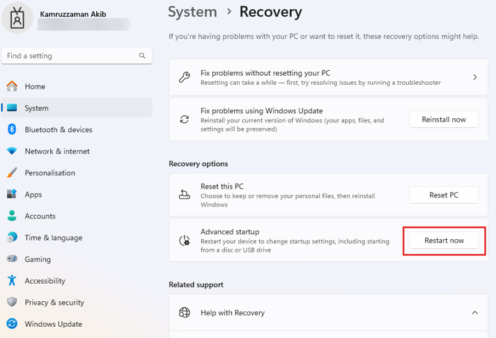
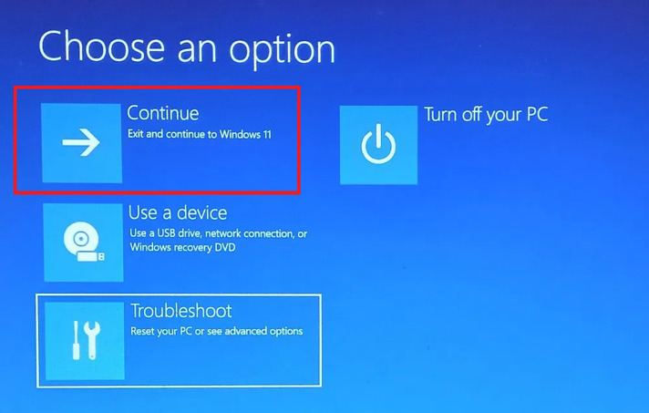
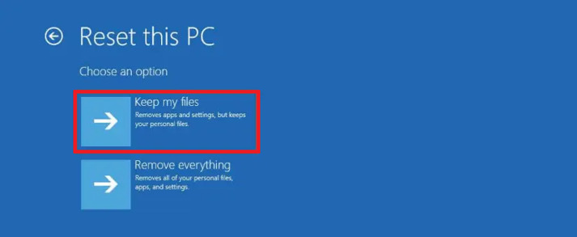

“The User Profile Service failed the sign-in” is a long-standing Windows error that locks a user out. On our Intune-managed laptops it was usually caused by a broken sync with Intune. This is the least destructive fix I found. Most of the time, step 3 alone solves it.
Steps
- Sign in with another local account on the device (not a Microsoft account).
- Open Advanced startup from Windows: go to Settings → System → Recovery (or search for “Reset this PC”). Next to Advanced startup, click Restart now.

Settings → System → Recovery → Advanced startup - Choose Continue (important): the PC restarts to the blue Choose an option screen. Select Continue (“Exit and continue to Windows 11”). Don't go into Troubleshoot yet. This round-trip makes Windows rebuild the Intune sync cleanly without touching any data.

Choose “Continue” - Sign in with the user's work account. After the restart, the user's account should now sign in normally.
If the error persists: reset with “Keep my files”
- Go back to Advanced startup (step 2).
- This time choose Troubleshoot → Reset this PC → Keep my files.

Keep my files - Follow the prompts. Windows is reinstalled but the user's personal files are kept. Applications need reinstalling (Intune will push the required ones again).